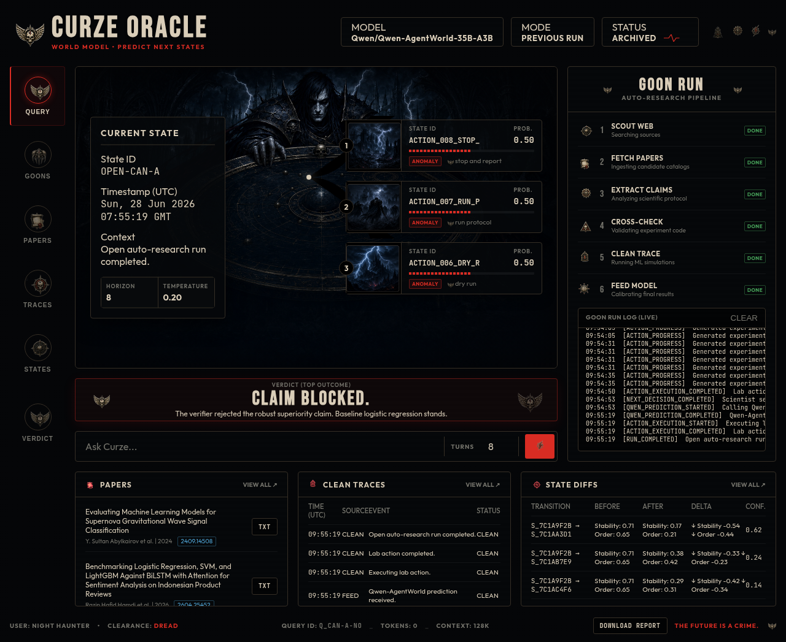

HISTORICAL — hackathon pitch deck, pre-final-ablations. Example numbers (effect_size 0.020979 / seed_noise 0.027972) are from an earlier demo iteration and do not match the published artifacts. Source of truth: paper.md + reports/ in the repo root.

LL
Predictive research lab OS
Lucky Loop
Predict before compute. Verify before claim.
A research-agent backend where Qwen-AgentWorld forecasts every expensive lab action, real Python tests reality, and a deterministic verifier decides what claims survive.
Qwen-AgentWorld
Real sklearn execution
Claim ledger
Audit-ready UI
The problem
Most AI research agents learn the story after the experiment.
They waste compute
Actions are launched before the system estimates runtime, failure mode, value of information or protocol risk.
They overclaim metrics
A single best score can become a confident scientific claim even when seed noise or leakage risk dominates.
They hide misses
Reports rarely preserve what the model predicted before execution, so failures disappear from the narrative.
The missing primitive is not another experiment runner. It is a pre-compute world model plus a claim gate.
The insight
Separate prediction, execution and scientific claims.
PlannerProposes a safe candidate action from a constrained catalog.
→
World modelPredicts observations, risks, runtime and claim impact before compute.
→
ExecutorRuns the real Python experiment and writes machine-readable evidence.
→
VerifierBlocks unsupported claims and writes a claim ledger.
03
Claims need verification
Product
An autonomous ML lab pipeline from question to honest report.
- Starts from a natural-language research question.
- Builds domain and method literature context.
- Searches Hugging Face/OpenML datasets and audits candidates.
- Generates a protocol, validates code, dry-runs, then executes.
- Writes events, notebook, predictions, analyses, ledger and final report.
Demo surface
The cockpit makes the research trace visible.
What the UI shows
- Current lab state
- Predicted branches
- Live pipeline events
- Literature sources
- Clean traces and verdict
- Downloadable report
World-model layer
Qwen-AgentWorld predicts the next lab state before the action runs.
Prediction contract
expected observation
expected artifacts
runtime / compute-waste risk
failure modes
protocol risks
claim support probability
recommendation: run | verify | modify | skip | stop
The prediction does not count as evidence. It is a planning signal that must later be compared with reality.
Trust layer
The verifier creates the honest moment.
What gets blocked
Apparent winner: C=0.1
effect_size = 0.020979
seed_noise = 0.027972
verdict = inconclusive
blocked: robustly better
allowed: best mean, but effect smaller than seed noise
claim ledger
every verdict is preserved
Blocked claim
Strong wording is rejected when evidence is insufficient.
Allowed rewrite
The report can still say what the evidence genuinely supports.
Evidence model
Every run becomes an audit folder, not just a pretty answer.
Generated artifacts
reports/lab/<slug>/
literature/*/sources.json
agenda/research_agenda.json
datasets/selected_dataset.csv
protocol/generated_protocol.json
generated/experiment.py
predictions/world_model_predictions.jsonl
notebook.jsonl
events.jsonl
claim_ledger.json
final_report.md
Differentiation
Why this is different from a classic auto-research loop.
| Capability | Classic research agent | Lucky Loop |
|---|
| Pre-compute forecast | No — actions run first | Yes — Qwen-AgentWorld predicts observations and risk |
| Prediction-vs-reality trace | Usually absent | Logged as first-class evidence |
| Claim discipline | Often narrative-based | Deterministic verifier and claim ledger |
| Generated-code safety | Variable | Static validation plus dry-run before full compute |
| Demo honesty | Best score becomes the story | Blocked claims remain visible |
Deployment
Built as a backend, UI and API surface that can swap agents.
Product path
Scientist planner through any OpenAI-compatible endpoint. World model through Qwen-AgentWorld. Python owns execution, verifier and reports.
Agent-in-repo path
Codex, Claude Code, OpenClaw or Hermes can operate from repo runbooks while the backend keeps trace labels explicit.
Development path
No-model smoke mode validates local code, artifacts and reports without pretending a model was called.
PYTHONPATH=src python web/server.py 8000
PYTHONPATH=src python -m luckyloop.lab --question "..." --budget 8
PYTHONPATH=src python scripts/validate_lab_artifacts.py --workspace reports/lab/<slug>
Roadmap
From impressive demo to credible open research infrastructure.
01
Freeze demo loop
Stable run, UI, report export and reproducibility evidence.
02
Ablation proof
Compare classic, classic+verifier and full Lucky Loop policies.
03
Agent adapters
Cleaner OpenAI-compatible planner and agent-in-repo modes.
04
Research packs
Curated protocols beyond sklearn tabular classification.
The immediate win is a 60-second story: forecast → execute → compare → block or allow the claim.
Close
Most AI scientists hallucinate after the experiment.
Lucky Loop makes a prediction before the experiment, runs the real code, compares prediction with reality, and only claims what survives verification.
Lucky Loop
Open auto-research backend
Audit-ready scientific claims